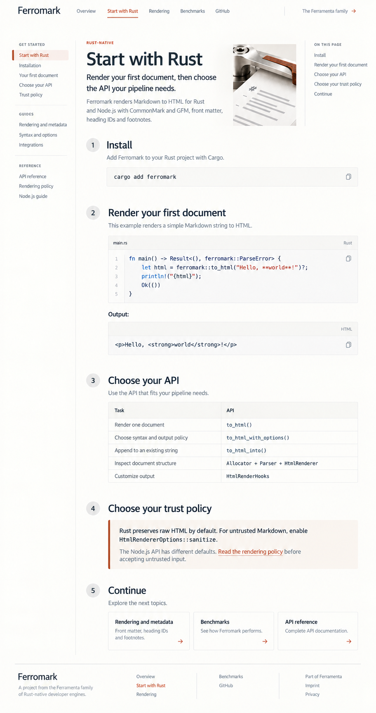

Eight core-page designs
Compare Ferroni: Start with Rust
Ferromark
Start with Rust
Overview
Start with Rust
Rendering & metadata
Benchmarks
Installation, a first real example, API choices and important input defaults.

Previous: Overview
Read source copy
Next: Rendering & metadata